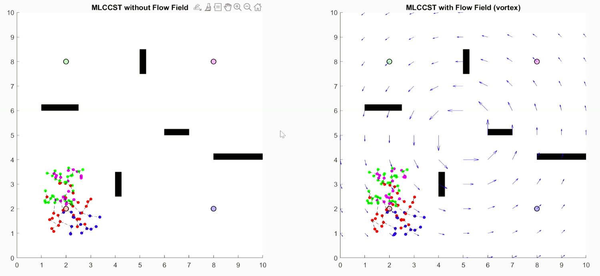
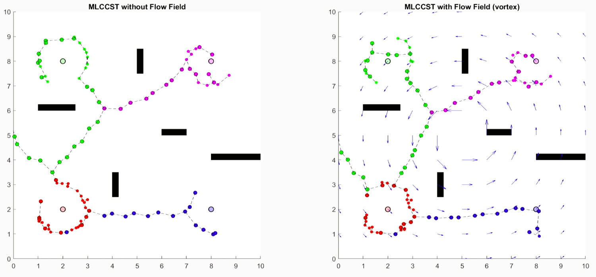
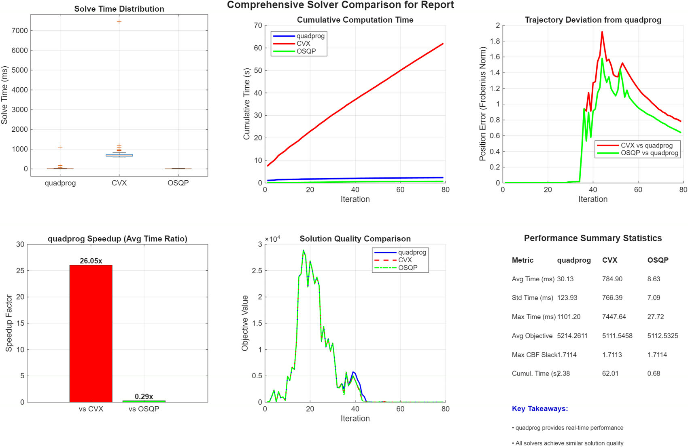

70 Robots, One Quadratic Program, Solved Three Ways
Picture a fleet of robots crossing a cluttered room while making sure every one of them can still see a teammate to talk to. At every control step, a convex QP nudges a simple goal-seeking controller just enough to keep the robots safe, connected and inside their actuator limits. Safety and connectivity are written as control barrier functions, and reaching the goal as a control Lyapunov function. I wasn't trying to invent a new barrier function here. I wanted to answer the numerical question underneath it: if the QP stays fixed, how do different solvers behave inside the control loop, and what do the KKT multipliers tell me about which constraints are really steering the fleet?
quadprog, CVX and OSQP. The bottom row tracks solve time per iteration, the objective value and the largest CBF slack.Let the robot do what it wants, minus the parts that would get it hurt.
The whole thing is built as a safety filter. A simple controller suggests whatever gets a robot to its goal, and the QP finds the closest safe input to that suggestion. The simple controller doesn't have to know anything about safety, and that's the point. Safety gets enforced once, right at the end, instead of being tangled into every behavior before it.
With single-integrator dynamics, the CLF and CBF conditions are both affine in the control input. Everything else depends on that. A cost that's quadratic in u with linear constraints is a convex QP, and a convex QP is something you can solve to the true global optimum on every tick of a control loop.
s.t. Acbf(x)·u − δ ≤ bcbf(x) safety, connectivity, obstacles
Aclf(x)·u − ε ≤ bclf(x) reaching the goal, allowed to bend
−umax𝟙 ≤ u ≤ umax𝟙, δ ≥ 0, ε ≥ 0
The slack variables decide what matters most. Safety and connectivity get a slack δ with a heavy penalty, and reaching the goal gets a slack ε with a lighter one. When the two really do clash, say a robot has to either break formation or hit something, the QP stays solvable by bending the cheaper constraint, and the size of the slack tells you exactly how much was given up. If every constraint were hard, the solver would simply fail.
| Constraint | Barrier | Inequality |
|---|---|---|
| Inter-robot safety | hsafeij = dij − Rs | nijᵀ(ui − uj) ≥ −αs(dij − Rs) |
| LOS connectivity | hconnij = Rc − dij | nijᵀ(ui − uj) ≤ αc(Rc − dij) |
| Obstacle avoidance | hobsio = dio − Robs | nioᵀui ≥ −αo(dio − Robs) |
Safety and connectivity are really the same inequality with the sign flipped. One pushes robots apart when they get closer than Rs, and the other pulls them back when they drift past Rc, so every pair lives inside a ring. I only enforce connectivity along a minimum spanning tree of the line-of-sight graph rather than on every edge. That keeps the number of constraints growing linearly with the fleet instead of quadratically, and it's the reason 70 robots was manageable at all.
The KKT conditions are both a guarantee and a window into the fleet.
Since H ⪰ 0 and every constraint is linear, the KKT conditions are necessary and sufficient. Any point that satisfies them is the one global minimizer. That matters a lot for this study, because it means all three solvers are provably aiming at the same answer. If they disagree, the difference is numerical and not something about the problem itself.
The multipliers also mean something physical, and that's half the reason to solve it this way instead of hand-tuning a potential field:
| If the multiplier is nonzero on | It means |
|---|---|
| a safety row | two robots are sitting right on the safety boundary, and that constraint is steering how they move relative to each other |
| a connectivity row | that LOS edge is about to break and is being actively held together |
| an input bound | the robot is saturated at ±umax |
| a slack (δ, ε) | the constraints are truly fighting each other, and the value says how much safety or progress was traded away |
So a dual variable works a bit like a sensor. I don't have to guess afterward from the trajectories why the fleet did something. The QP tells me which constraints were binding at that moment, and by how much.
Four clusters of robots, five obstacles and a whirlpool.
I started N = 70 robots in four tight clusters inside a 10 × 10 m space with five rectangular obstacles, each robot with a fixed goal on the far side. The safety radius Rs was 0.25 m, the communication range Rc 4.0 m, the obstacle clearance Robs 0.8 m and umax 3.0 m/s. Every solver got exactly the same starting positions, goals and CLF and CBF parameters, and the fleet reached its goals by iteration 79.
I ran two versions: the plain workspace, and the same run with a vortex flow field laid over it to stand in for the ocean currents this work is ultimately aimed at. The flow bends the trajectories a lot, and the optimization still keeps everyone connected and gets every robot home.


Same QP, same seed, and very different stopwatches.
I picked three solvers from three different families: MATLAB's quadprog
(interior point), CVX (conic interior point behind a
disciplined convex programming layer) and OSQP (operator-splitting ADMM).
On every iteration I logged the solve time, the objective value, the largest CBF slack and
how far the trajectories drifted from the quadprog run.
| Solver | Avg (ms) | Max (ms) | Std (ms) | Total (ms) | Avg objective | Pos. diff (m) |
|---|---|---|---|---|---|---|
| quadprog (IPM) | 30.13 | 1101.20 | 123.93 | 2380.43 | 5214.26 | 0.00 |
| CVX (SDPT3) | 784.90 | 7447.64 | 766.39 | 62006.98 | 5111.55 | 0.78 |
| OSQP (ADMM) | 8.63 | 27.72 | 7.09 | 681.98 | 5112.53 | 0.64 |
Speed first. OSQP averaged 8.63 ms, quadprog
30.13 ms and CVX 784.90 ms, which is one to two orders of
magnitude slower. Over the whole run that adds up to 0.68 s, 2.38 s and 62 s of solving.
For a controller that has to close its loop on every step, that's the line between running
in real time and not.
The spread mattered more than the average. OSQP's slowest solve was
27.72 ms against an 8.63 ms average, which is nicely predictable. quadprog
averaged 30 ms but jumped to 1101 ms at one point, 36 times its average,
with a standard deviation four times its own mean. In hard real-time work the worst case is
what you design around, and this is the result that makes the case for ADMM in the inner
loop.
Do they agree? Mostly, yes. The average objectives land within about 2% of each other, and all three report practically the same largest CBF slack (≈1.7114). So they agree on when safety and connectivity are tightest, and for a safety filter that's what counts. The trajectories drift apart by about 0.6 to 0.8 m in a 10 m space. You can see it, but it comes from numerical tolerance, not from the solvers making different decisions.

Reliability turns the ranking upside down. quadprog never had
a numerical breakdown, and it hands back the KKT multipliers directly, which is the only
reason the constraint analysis above was possible. OSQP sometimes met its stopping criteria
while its KKT residuals were still bigger than the interior point solvers', and those were
exactly the iterations where its objective and trajectory drifted furthest. Finishing fast
isn't the same thing as finishing.
OSQP still has plenty of room to improve here. P = H is diagonal and A doesn't change over
time, so OSQP factors (P + ρI) once and reuses it for the entire run. With ρ, scaling and
polishing tuned properly, I think it could safely take quadprog's place in the
loop. Where I landed: quadprog is the dependable baseline,
OSQP is the real-time option once it's tuned, and CVX is a high-accuracy reference for
checking the formulation, but never something to run as the controller.
Why a flat toy problem is really about ice.
This project is one piece of a bigger effort on exploring under ice and below the surface for long stretches with mixed fleets of AUVs, called the MOTHERSHIP concept. Down there, communication is acoustic, patchy and short range, and there's no GPS. Keeping line of sight as a hard constraint isn't an academic nicety in that world. If the graph breaks, you lose vehicles. I kept the planar single-integrator version small on purpose, so the pieces I built here, the barrier formulation, the MST connectivity structure, the KKT analysis and the solver benchmarks, carry over to harder vehicle models without being rebuilt. The research version of this idea, with a six-byte spanning tree protocol and BlueROV2 fleets in HoloOcean, became my IROS 2026 paper.
The report lists where I want to take it next. I'd like to follow how the set of active CBFs changes over time, to measure how often safety and connectivity really compete. I want to tune OSQP for this particular QP with polishing, scaling and warm starts. And I want to scale up to bigger teams with realistic AUV dynamics, communication delay and environmental flow.
Prajjwal Dutta and Wenlong Zhang, Manufacturing Systems and Networks, Arizona State University. The full formulation, all the metrics and a 36-entry bibliography are in the final report.
What I took away from it.
Safety belongs in the constraints, not in the behavior. When a filter projects whatever the planner suggests onto the safe set, you never have to trust the planner, and that's the only approach I'd want sitting under a learned or hand-tuned policy. Convexity is what makes the whole thing work. Barriers that are affine in u turn a tangled 70-robot problem into one QP with a single global optimum per step, and without that I couldn't even have asked the solver question. And the solver turned out to be part of the controller. Same math, same seed, same KKT point, and still a 90× spread in solve time, plus real differences in worst-case delay and numerical reliability. Picking a solver is a control engineering decision, not a detail to leave for later.